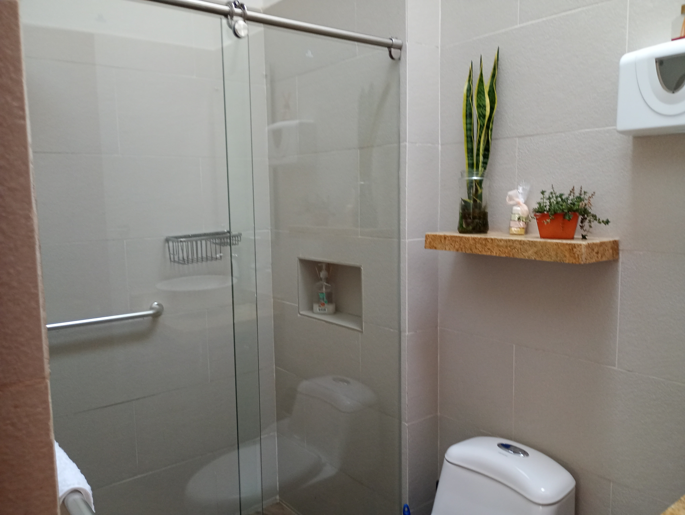
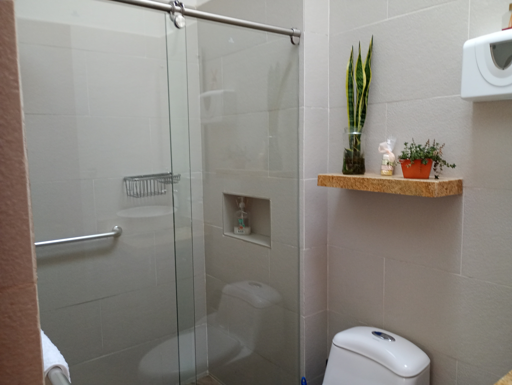
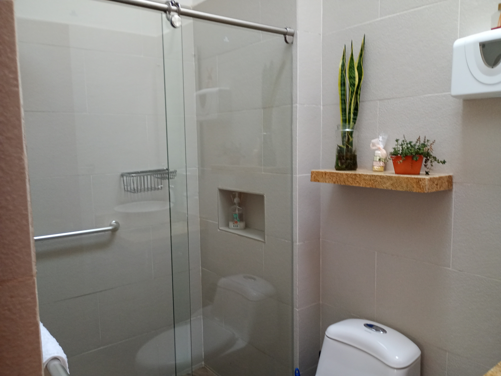

Galería
 

Bella finca para descansar y celebrar cumpleaños, aniversarios o bodas. Rodeada de naturaleza, con amplias zonas verdes y arquitectura colonial. 4 cabañas, 6 habitaciones, 8 camas cómodas, excelente lencería, 6 baños, cocina equipada, zona BBQ y fogata. Disfruta vistas al valle y a la montaña, TV con Netflix, estacionamiento privado y paseos en bicicleta.
"Una experiencia mágica, perfecta para celebrar nuestro aniversario. Todo impecable."
"La vista es impresionante. Las cabañas súper cómodas. Volveremos sin duda."
"Excelente atención, ambiente acogedor, y un lugar hermoso para descansar."
